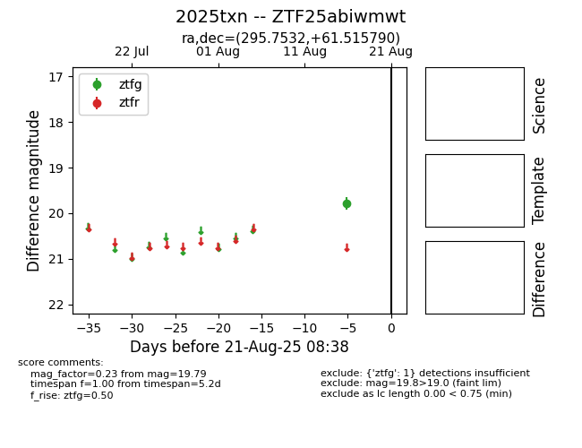

Target 2025txn at 2025-08-22 16:51, see:
FINK: fink-portal.org/ZTF25abiwmwt
Lasair: lasair-ztf.lsst.ac.uk/objects/ZTF25abiwmwt
ALeRCE: alerce.online/object/ZTF25abiwmwt
TNS: wis-tns.org/object/2025txn
YSE: ziggy.ucolick.org/yse/transient_detail/2025txn
alt names
ZTF25abiwmwt (ztf,alerce)
2025txn (tns,yse)
coordinates:
equatorial (ra, dec) = (295.7532,+61.51579)
galactic (l, b) = (93.7012,+17.82275)
photometry
last atlaso=19.56, ztfg=19.79
1 atlaso, 1 ztfg detections
